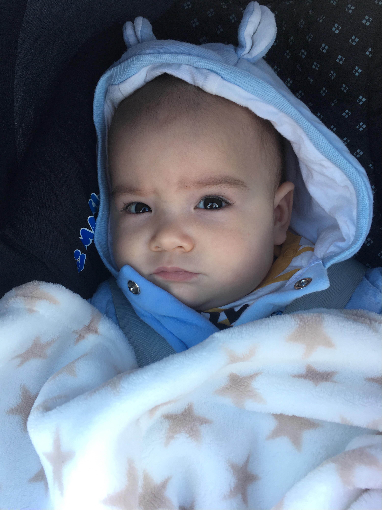

Over mij
Ik ben nu 11 weken oud en heel erg gegroeid! Ik ben nu 60 cm lang, weeg 6300 gram en draag maatje 62. Ik kan al veel beter kijken. Ik ben minder gevoelig voor lichtprikkels en neem sneller bewingen waar, echter gezichten om mij heen herkennen lukt nog niet. Ik vind het leuk om muziek te maken met samba ballen en tamboerijn. Ik ga volgende week op vakantie waar ik na afloop nog zeker over wil gaan vertellen.
Op vakantie naar Suriname
Ik was 12 weken oud toen ik op vakantie ging naar Suriname met KLM. Het was mijn eerste keer vliegen en dat vond ik erg spannend vanwege alle gekke geluiden en heel wat onbekende gezichten. De reis viel achteraf wel mee ondanks het een 8 uur durende vlucht was. Met het mini tv’tje kon ik kijken naar filmpjes samen met mijn papa en zus. Ik heb niet meer dan 3 keer gehuild en redelijk lang kunnen slapen. Ik sliep in een wiegje dat vast zat aan de muur voor onze stoelen.
In Suriname is het overdag enorm warm waardoor ik alleen een rompertje hoefde te dragen. Ik verbleef bij mijn opa en oma, op 30 kilometer afstand van Paramaribo. Hier heb ik voor het eerst een stukje papaya en mango geproefd. Mijn broer houdt ervan om daar kokosnoten te kappen waardoor ik er een slokje van kon drinken, helaas plakte het wel erg toen ik knoeide.
Ondertussen kon ik al heel goed rollen om op mijn buik te komen.
We hebben heel veel kunnen zwemmen in Krama. Niet alleen in een zwembad hebben we gezwommen maar ook in Cola Creek, een recreatiepark, en in Da Kaboera Powakka. Da Kaboera bevindt zich in het dorp Powakka in het district Para. De bewoners in het dorp zijn indianen van het volk Arowakken. Vanwege de ligging van het dorp aan de Surinamerivier is het voor toerisme toegankelijk gemaakt.

Wanneer ik ging baden werd er Blauwsel in het water gedaan. Dit is een Surinaamse traditie: Blauwsel zorgt ervoor dat het kind tegen mensen met verkeerde bedoelingen wordt beschermd. Dit wordt als een traditie beschouwd.
Mijn papa en zus gingen een week eerder dan ik naar huis, omdat mijn papa weer moest werken en mijn zus weer naar school ging. Maar ik bleef met mijn mama en broer lekker nog een weekje langer!